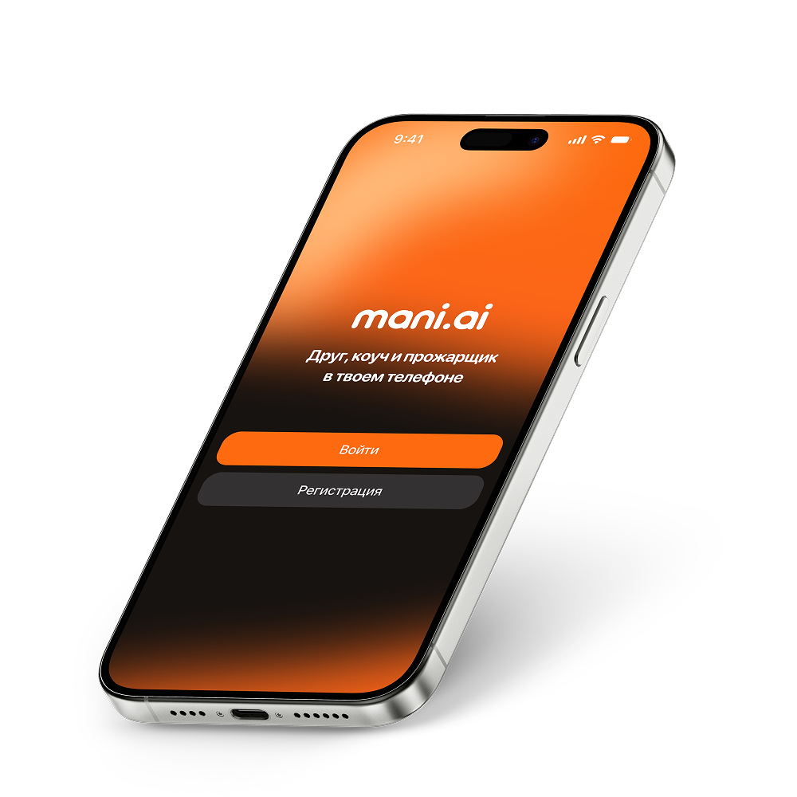
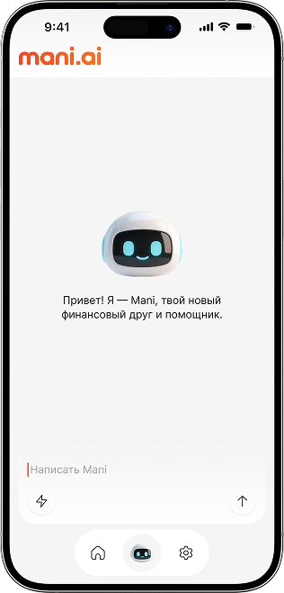
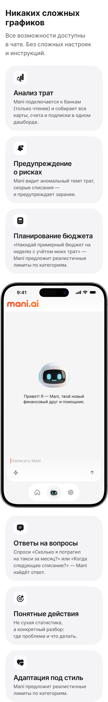
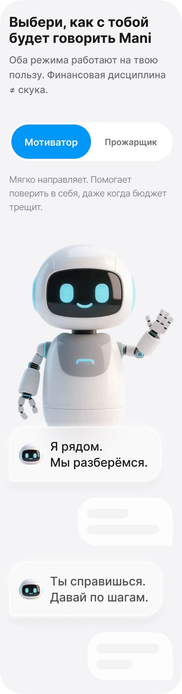
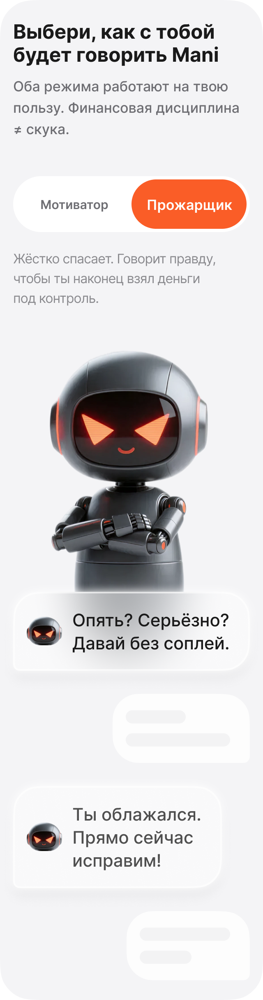
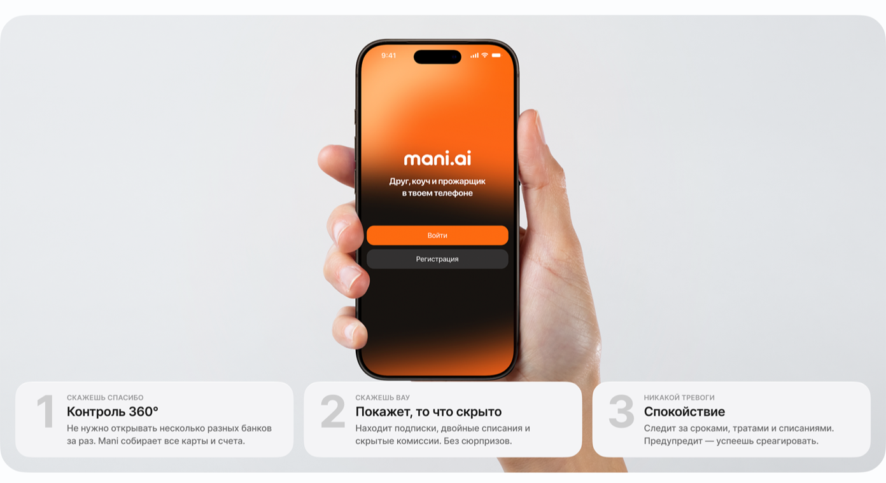
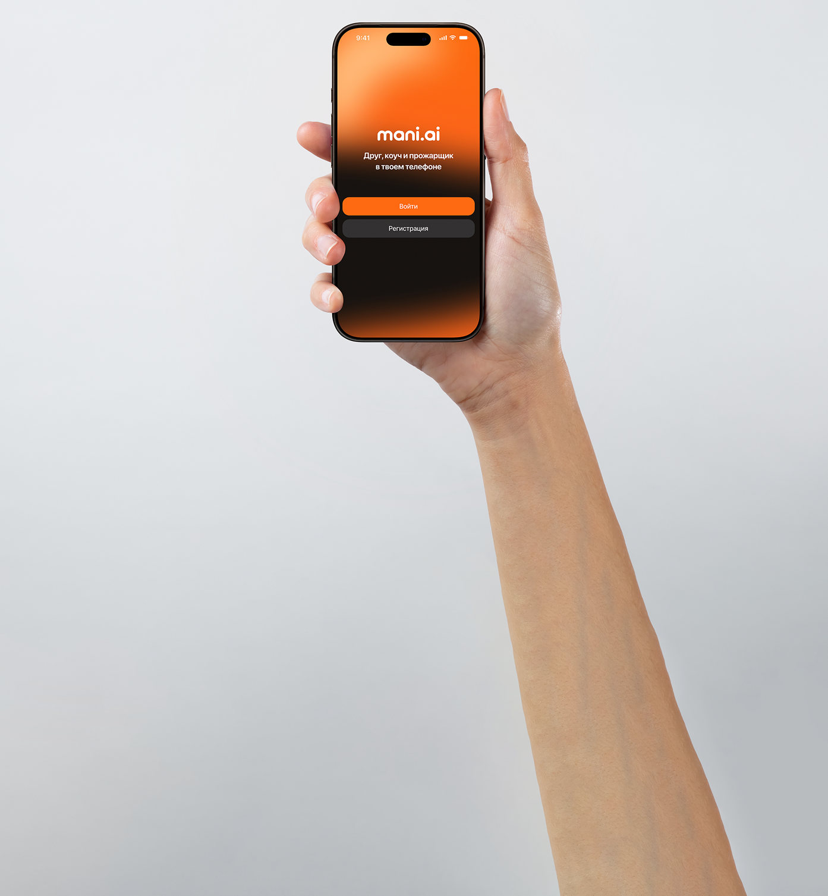
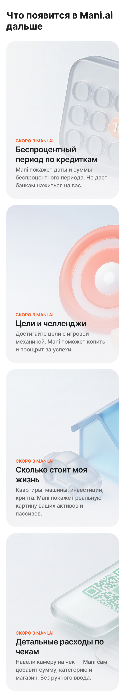
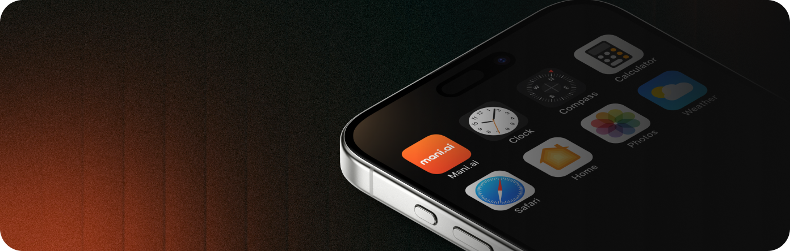
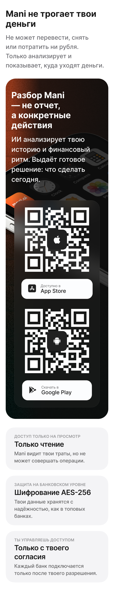

ИИ-помощник для личных финансов
Хаос в деньгах заканчивается здесь
Mani держит деньги в порядке: показывает утечки, подписки, лишние платежи и риски по бюджету. В чате с Мани можно обсудить планы, покупки, цели и сложные решения - как с помощником, который понимает контекст.
Первые 1000 пользователейполучают полный доступ бесплатно навсегда

Оффер запуска
Первые 1000 пользователей забирают Mani.ai бесплатно навсегда
Мы запускаем Mani.ai и ищем первых пользователей, которые помогут сделать финансового помощника по-настоящему полезным. Участники раннего доступа получают полный доступ ко всем текущим и будущим функциям.
Место узнаешь после заявкиочередь открыта для первых 1000 пользователей
1000 местранний доступ бесплатно навсегда
Сначала контактпотом покажем номер и статус
Посмотри, как Mani разбирает расходы
Выбери ситуацию. Mani не угадывает и не следит за тобой — он читает финансовые сигналы: суммы, даты, повторы и темп списаний.
Mani.ai
видит повтор 649 ₽
649 ₽ каждый месяц
13-е число
Категория: сервис
Потенциально лишний расход
7 788 ₽/год
Финансовые сигналы вместо гаданий
Mani показывает повторяющиеся списания
Он не знает, пользуешься ты сервисом или нет. Зато видит регулярный платеж, сумму, дату и помогает быстро решить: оставить или отключить.
Занять место и проверить свои расходыВсё, чтобы перестать терять деньги
Только ясная картина ваших финансов.


Все банки и счета в одной картине
Больше не нужно прыгать между приложениями. Подключение банков и счетов в один клик.
БанкиОбщий баланс
- Добавить +
- Фу Банк ✓
- Ай-яй Банк ✓
- Куськин Банк ✓
Находит деньги в забытых подписках
Автоматически проверяет все списания по всем картам. Показывает, какие подписки активны.
ФЕВ
13Дрянь полезная499 ₽
13Дрянь полезная499 ₽
ФЕВ
13Дрянь любимая649 ₽
13Дрянь любимая649 ₽
Никаких сложных графиков
Все возможности доступны в чате. Без сложных настроек и инструкций.
Анализ трат
Mani подключается к банкам и собирает все карты, счета и подписки.
Предупреждение о рисках
Видит аномальный темп трат, скорые списания и предупреждает заранее.
Планирование бюджета
Предложит реалистичные лимиты по категориям.

Ответы на вопросы
Спроси, сколько потратил за месяц или когда следующее списание.
Понятные действия
Не сухая статистика, а конкретный разбор проблемы.
Адаптация под стиль
Выбери тон: Мотиватор поддержит, Весельчак честно подсветит, где деньги опять устроили побег.

Выбери, как с тобой будет говорить Mani
Оба режима работают на твою пользу. Финансовая дисциплина не обязана быть скучной.
Поддержит, разложит всё по шагам и поможет не паниковать, даже когда бюджет трещит.


3 причины установить Mani.ai сегодня
Каждая - реальная выгода, которую вы получите с первого дня использования


Контроль 360°
Не нужно открывать несколько разных банков за раз. Mani собирает все карты и счета.
Покажет, то что скрыто
Находит подписки, двойные списания и скрытые комиссии. Без сюрпризов.
Спокойствие
Следит за сроками, тратами и списаниями. Предупредит — успеешь среагировать.
Данные передаются по защищённым каналам банка.
Забираешь доступ сейчас - получаешь и будущие функции тоже
Первые 1000 пользователей получают не демо и не урезанную версию, а полный доступ ко всему, что появится в Mani.ai дальше.

Mani не трогает твои деньги
Не может перевести, снять или потратить ни рубля. Только анализирует и показывает, куда уходят деньги.

Места для первых 1000 пользователей не откроются повторно
Когда ранний доступ закроется, бесплатный полный доступ навсегда больше не будет доступен новым пользователям.
Очередь раннего доступа
Займи место и узнай номер
Сколько осталось и на каком ты месте, покажем после заявки.
Занять место бесплатноТолько чтение
Mani видит расходы и подписки, но не может перевести, списать или потратить деньги.
Деньги остаются в банке
Платежи, переводы и настройки счета подтверждаешь только ты в своем банке.
Только с твоего согласия
Банк подключается только после твоего разрешения. Доступ можно отключить.
Что Mani может видеть?
Только данные, которые нужны для анализа: баланс, категории расходов, регулярные списания и историю операций в режиме просмотра.
Чего Mani не может сделать?
Не может переводить деньги, оформлять платежи, менять настройки счета или открывать новые продукты в банке.
Как отключить доступ?
Доступ можно отключить в настройках подключения. После отключения Mani перестанет получать новые данные.
